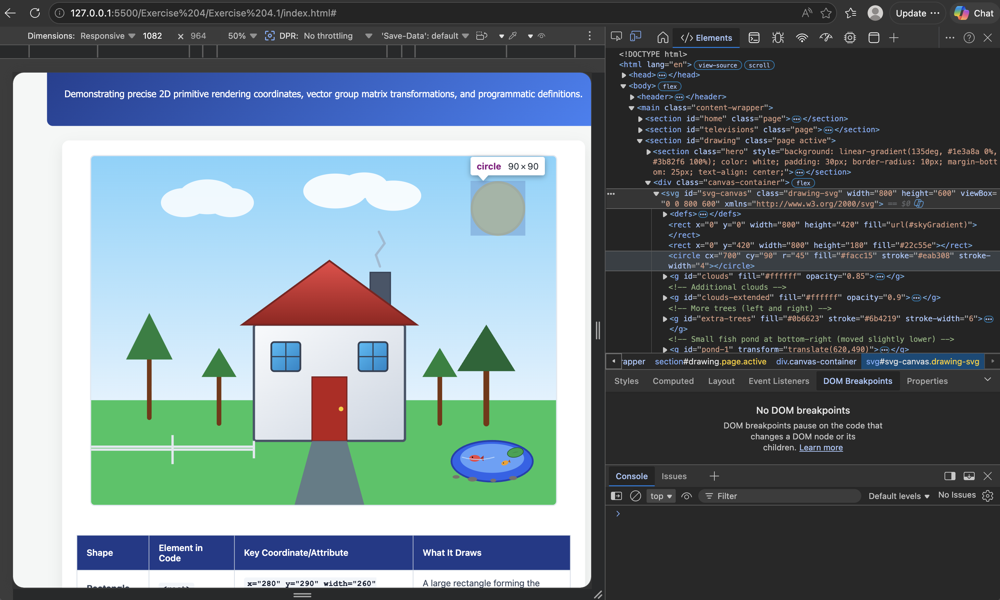

Australian Appliance Energy Consumption
Understanding how household appliances contribute to your energy bill and reducing Australia’s carbon footprint.
The Star Rating System
Australia’s Energy Rating Label helps consumers compare appliance efficiency and running costs.
Why It Matters
Energy-efficient appliances reduce electricity costs and help protect the environment.
Television Energy Efficiency (2026)
| Model | Technology | Star Rating | Annual Energy (kWh) | Cost ($/Year) |
|---|
Exercise 4.1: Advanced SVG Elements
Demonstrating precise 2D primitive rendering coordinates, vector group matrix transformations, and programmatic definitions.
| Shape | Element in Code | Key Coordinate/Attribute | What It Draws |
|---|---|---|---|
| Rectangle | <rect> |
x="280" y="290" width="260" height="200" |
A large rectangle forming the house base body wall framework. |
| Triangle | <polygon> |
points="260,290 560,290 410,180" |
A closed triangle element that forms the architectural roof peak over the house. |
| Circle | <circle> |
cx="700" cy="90" r="45" |
A perfect circle positioned in the top-right sky area representing the sun. |
| Ellipse | <ellipse> |
cx="200" cy="70" rx="50" ry="30" |
An elongated oval element creating a balanced, rounded cloud segment. |
| Line | <line> |
x1="100" y1="450" x2="100" y2="350" |
A straight vertical line segment acting as a structural tree trunk anchor. |
| Polyline | <polyline> |
points="497,190 490,170 505,150 495,130" |
An open, multi-segment connected zig-zag path layout tracing rising chimney smoke. |
| Group: Fish Pond (wrapper) | <g id="pond-1"> |
transform="translate(620,490)" |
Container group for the entire fish pond — use to move/scale the pond as a single unit. |
| Ellipse: Pond (outer rim) | <ellipse> |
cx="70" cy="35" rx="70" ry="35" stroke="#1e40af" stroke-width="3" |
Outer water shape providing rim / darker edge for the pond. |
| Ellipse: Pond (surface) | <ellipse> |
cx="70" cy="30" rx="55" ry="25" fill="#60a5fa" opacity="0.95" |
Inner, lighter water surface layer. |
| Group: Lily pad | <g> <ellipse> <path> |
transform="translate(110,20) rotate(-12)" / ellipse rx="14" ry="8" |
Lily pad element and small vein/highlight; positioned on the pond surface. |
| Group: Fish (1) | <g> <ellipse> <polygon> <circle> |
transform="translate(40,30) scale(0.95)" / ellipse rx="10" ry="6" |
Simple fish composed of an ellipse (body), polygon (tail) and circle (eye). |
| Group: Fish (2) | <g> <ellipse> <polygon> <circle> |
transform="translate(92,38) scale(0.78) rotate(-20)" / ellipse rx="8" ry="5" |
Second fish with smaller scale & rotated orientation for variety. |
| Group: Stones (edge) | <g id="pond-stones"> <ellipse>… |
ellipse cx="8" cy="62" rx="6" ry="3" / others at cx=36,72,106 |
Small stones placed along the pond edge for natural detail. |
| Path: Ripples | <path d="M18,28 q28,8 56,0"> |
stroke="#bfdbfe" stroke-width="1.6" fill="none" opacity="0.8" |
Gentle surface ripple to suggest subtle water movement. |
Exercise 4.1 Academic Submission Summary
Coordinate Matrix Mapping: The canvas maps from its absolute top-left vector origin point (0,0) down to the edge parameters (800,600). Shapes like the Sun utilize coordinate points (cx="700", cy="90") to map accurately onto the view plane.
Structural Organization (<g>): The matching structural windows were designed globally inside a singular definition block using uniform layout styling variables, and were positioned sequentially onto the canvas structure using precise geometric translation functions: transform="translate(x, y)".
DOM Screenshot / Capture Instructions

Screenshot added to the DOM screenshot area.
Exercise 4.7: Data-Driven Document Grouping & Labels
Programmatic structural binding of horizontal bar elements and text metadata metrics using dynamic scale transformations.
📊 Interactive Visualization Insight
The chart below visualizes the Annual Energy Consumption (kWh/year) across major television models registered in the Australian marketplace for 2026. Higher energy values denote higher ongoing household operational electrical costs and an increased environmental carbon load footprint.
Comparative Annual Appliance Energy Consumption Track
⚙️ Technical Implementation
- D3.g Structural Hierarchy: Combines rectangles and metadata strings into an atomic
<g class="bar-row">element. - Dynamic Translation Matrix: Positions individual rows cleanly along the Y-axis plane using
yScale(d.model)offsets. - Linear Scale Constraints: Normalizes raw energy data into pixel dimensions securely across available viewport boundary spaces using
d3.scaleLinear().
🎓 Core Objectives Met
This lab demonstrates proficiency in coordinating relational dimensions across tabular datasets. By switching from manual primitive geometry plotting to runtime vector data binding transformations, the UI dynamically maps text labels and chart scale parameters to accurately reflect changes in the underlying database without causing element overlap.
About This Project
This website was developed as part of COS30045 Data Visualisation at Swinburne University of Technology.